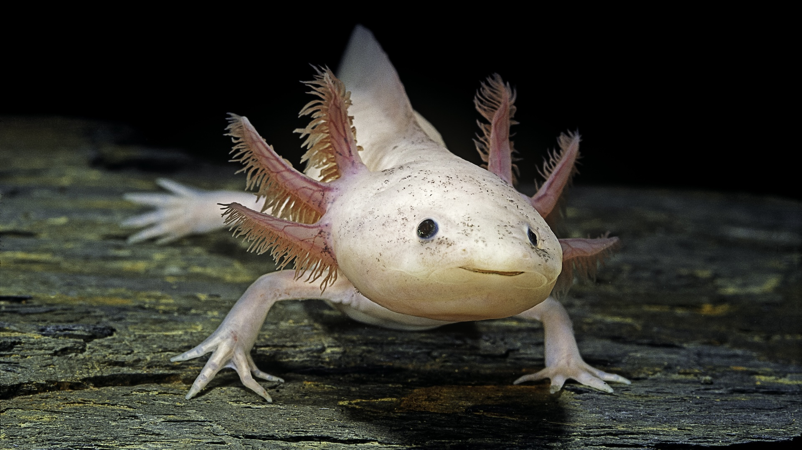
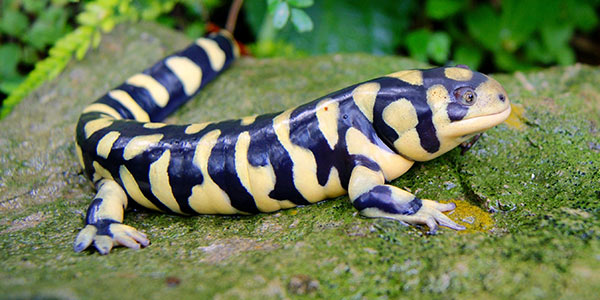

Amphibians are cold-blooded vertebrates that can live both on land and in water, a
"double life" that gives them their name. Examples include frogs, toads, salamanders,
newts, and caecilians. They are characterized by moist,
porous skin, a complex life cycle, and a need for water to reproduce and stay hydrated.


Can you keep them as pets?
Yes, you can keep amphibians as pets, but they have specific and often expensive housing,
diet, and environmental requirements that are crucial for their survival. Popular beginner-
friendly options include Dwarf Clawed Frogs, White's Tree Frogs, and Pacman Frogs,
but it's important to research the needs of any specific species before getting one.